13-02-2026
I was eager to start tinkering with my building blocks concept, so I started immediately after the end of lecture 2.
I went to the Design Lab, to the lego table, and just started messing around and building a visual concept of my power strip idea.
When satisfied, I went home.
I however started thinking of how I could make it more interesting and show more of the inner workings.
I dug around in my attic and found some old lego technic cars which I tore to pieces. I envisioned a sort-of latch system. The connector
could then in the future hold electronic components like electrical wire connectors and the latch would secure it in place.
This was a fun "seed" I started tinkering with :)
For the first tinkering session at the design lab I started with making a socket block and a switch block. I quickly made something with legos that had the general shape, just so I could see what I am working with. They had holes that allowed them to be connected with a "connector piece".
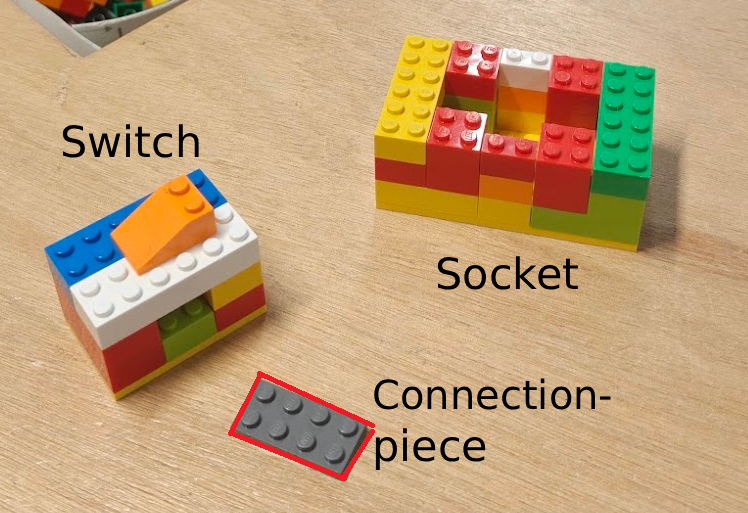When connected it looked like one block. This is the idea of the power strip building blocks. The arrow points where the connector piece is.
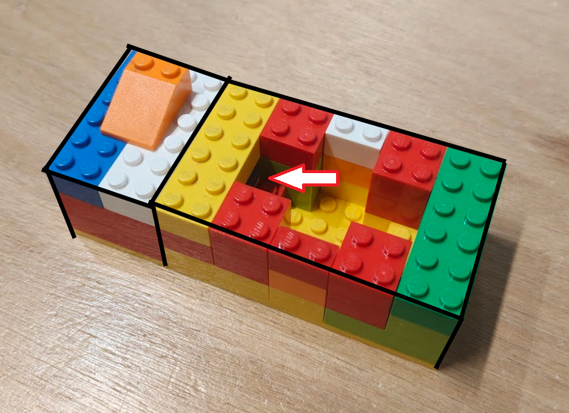I then continued with making a smaller ungrounded version of the socket, this could also be connected which made it into a real power strip.
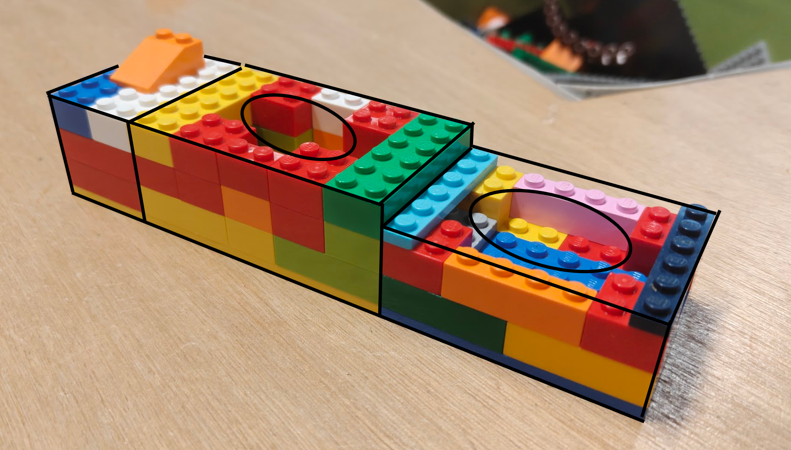Next on the agenda was making some sort of cord. I came up with this idea by walking around the design lab and finding what types of rope exist. A simple rubber band was perfect as it's nice and squishable, making it easy to place between blocks. This could be used like the connector piece.
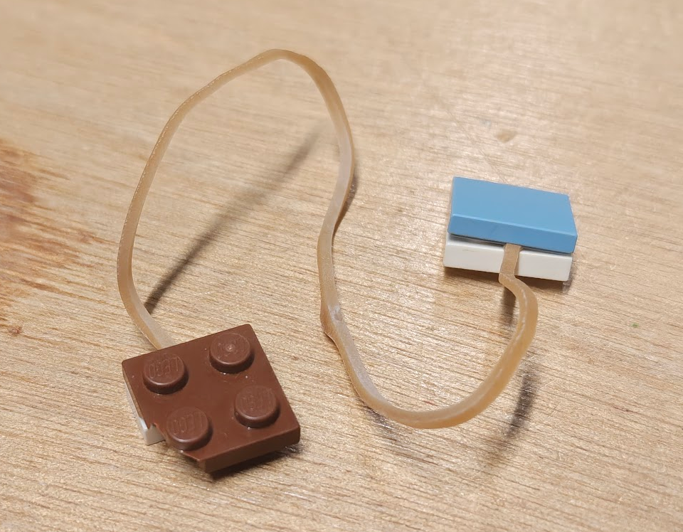This already started looking more like what I was going for with my power strip idea. Something that could be connected in many ways, in this case with each of the blocks connected by cords.
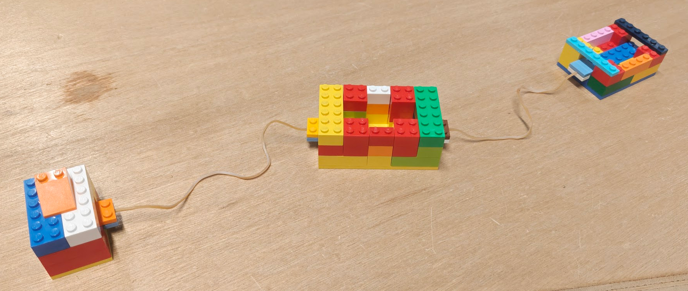Next I made a small plug to be the start piece.
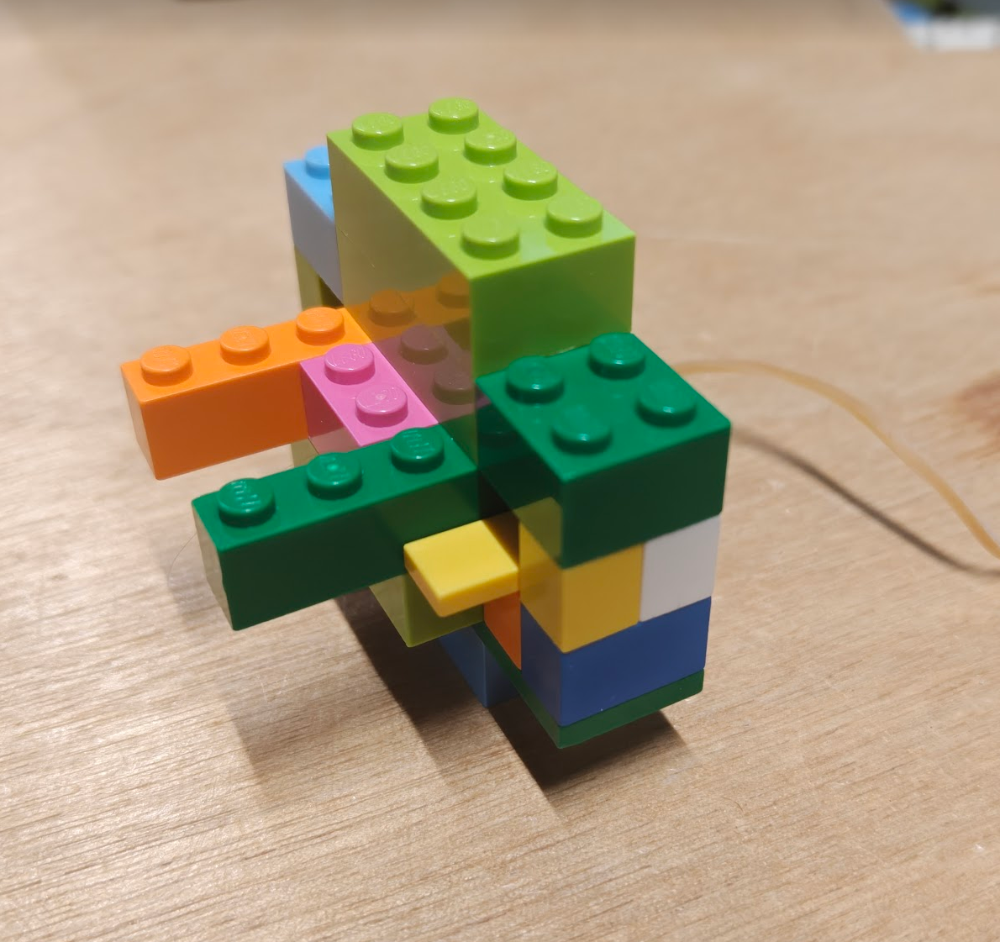Here's a little sample of how I imagine it with the connector shown again.
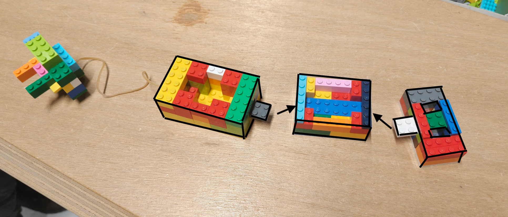Here's an overview of the pieces I made during the first tinker session.
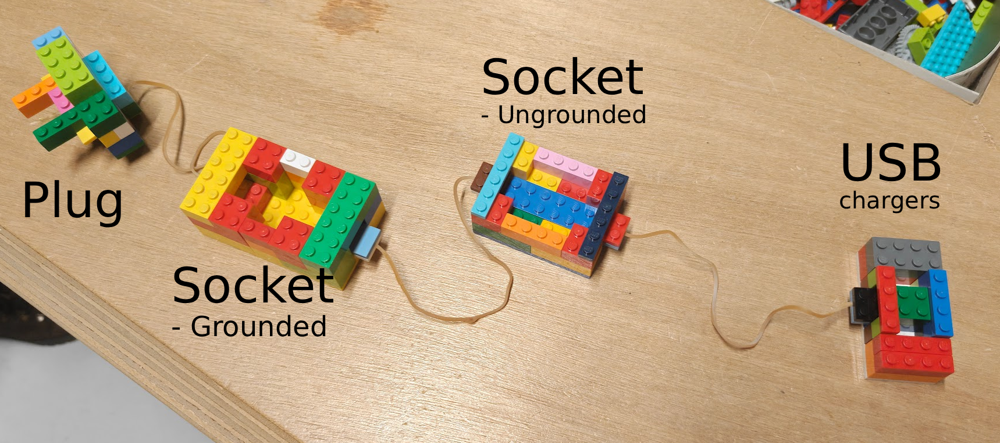I wasn't quite satisfied with what I created during the first tinker session, especially the connector part. While the blocks themselves were basically how I would envision them, it's not really anything ground breaking and doesn't show inner workings.
So I went more to my lego technic box and I started experimenting with a different idea. I still wanted the connector piece, but I wanted a latch system that could secure them and then be removed again. I was inspired by a little forklift build I still had, which used a little rubber band to move the fork back up when pushed down.
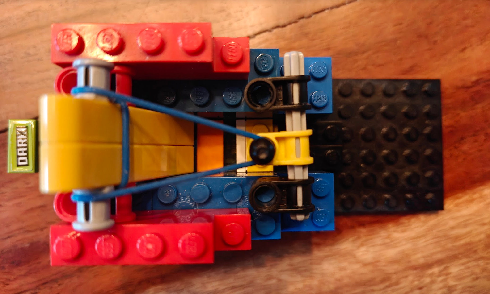I came up with a latch design with a little lever that, when a connection piece with a little buldge enters, moves back and grabs the connection. When inserted, the buldge keeps the connector in place. When the lever is pulled, the latch moves back and the connector can be removed.
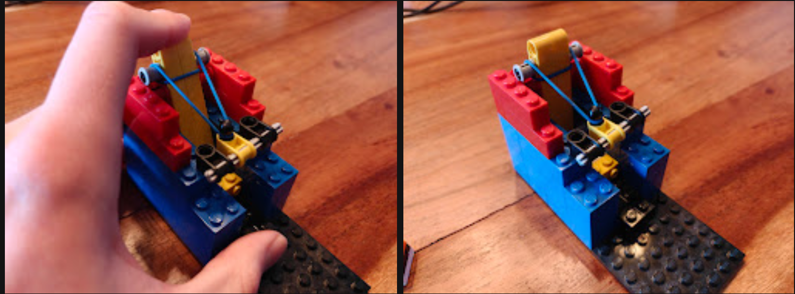Here's a close up of the connection piece with the two "bulges":
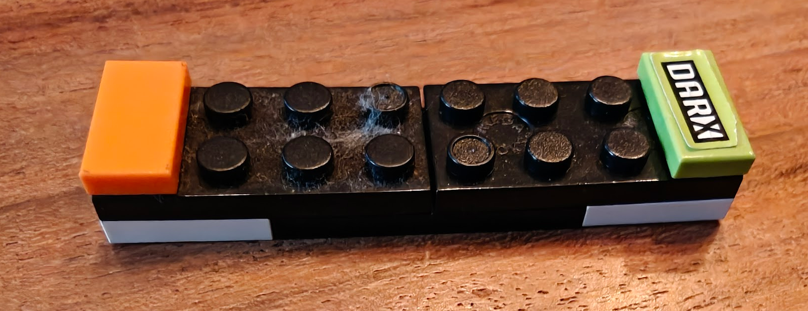And this is how the lever is operated:
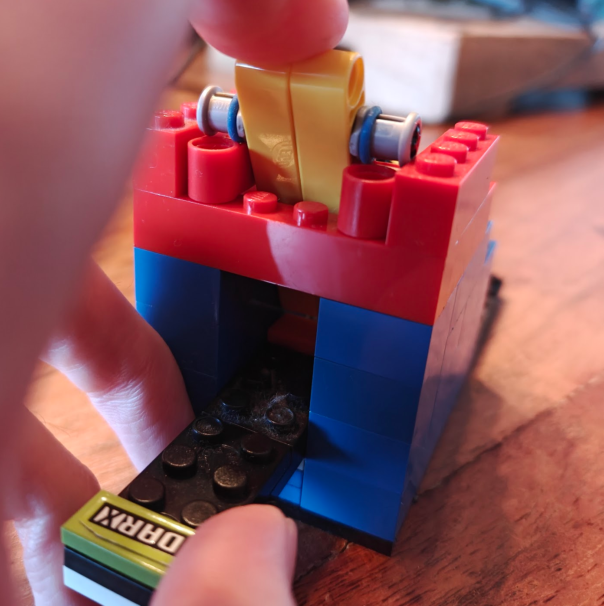I made a short video demonstrating the latch mechanism in action: